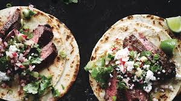
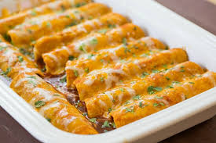
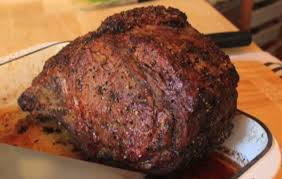
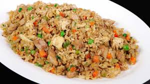

Random Recipes That Are Good
Steak Tacos
| Ingredients | Directions |
|---|---|
| Corn Tortillas | Cook steak on a pan on medium heat until cooked well |
| Steak | Heat up tortillas on pan, make sure to heat up both sides |
| Cheese of your choice | Put some steak onto a tortilla |
| Salsa | Put the cheese of your choice onto the steak |
| Onions | Next dice the onion and put it onto the taco |
| Cilantro | Last put some salsa on the taco and then enjoy |
Enchiladas
| Ingredients | Directions |
|---|---|
| 2 tablespoons canola oil | In a saucepan over medium-low heat, combine the canola oil and flour. Whisk together and allow to bubble for 1 minute. Pour in the red sauce, chicken broth, salt and pepper. Bring to a boil. Reduce the heat and simmer while you prepare the other ingredients. |
| 2 tablespoons all-purpose flour | While the sauce is simmering, brown the ground beef with the onions in a large skillet over medium-high heat. Drain the fat, add the salt and stir to combine. Turn off the heat and set aside. |
| One 28-ounce can enchilada or Mexican red sauce | In a small skillet over medium heat, heat some canola oil. Lightly fry the tortillas just until soft. Do not crisp. Drain on a paper towel-lined plate. Repeat until all the tortillas have been fried. |
| 2 cups chicken broth | Spread 1/2 cup of the sauce in the bottom of a 9- by 13-inch baking dish. Next, one at a time, dip each tortilla into the sauce. Set the sauce-soaked tortilla on a plate. Place on some of the meat mixture, chilies, green onions and black olives. Top with a generous portion of grated Cheddar. Roll up the tortilla to contain the filling inside. |
| 1/2 teaspoon salt | Place the tortilla seam side down in the baking dish. Repeat with the rest of the tortillas and pour the remaining sauce over the top. End with a generous sprinkling of cheese and any other bits of chiles, green onions or olives you have left over from the filling. |
| 1/2 teaspoon black pepper | Bake the enchiladas for 20 minutes, or until bubbly. Sprinkle chopped cilantro over the top and serve. |
| 1 pound ground beef | |
| 1 medium onion, finely chopped | |
| 1/2 teaspoon salt | |
| 10 to 14 corn tortillas | |
| Two 4-ounce cans diced green chilies | |
| 1 cup chopped green onions | |
| 1/2 cup chopped black olives | |
| 3 cups grated sharp Cheddar cheese | |
| Cilantro, for garnish |
Original recipe Here
Prime Rib
| Ingredients | Directions |
|---|---|
| 1 10 pound prime rib roast | Place the roast in a roasting pan with the fatty side up. In a small bowl, mix together the garlic, olive oil, salt, pepper and thyme. |
| 10 minced garlic cloves | Spread the mixture over the fatty layer of the roast. |
| 2 tablespoons olive oil | Let the prime rib sit until it is at room temperature |
| 2 teaspoons of salt | Preheat oven to 500 degrees F |
| 2 teaspoons of ground black pepper | Bake the roast for 20 minutes in the preheated oven, then reduce the temperature to 325 degrees F (165 degrees C), and continue roasting for an additional 60 to 75 minutes. The internal temperature of the roast should be at 135 degrees F (57 degrees C) for medium rare. |
| 2 teaspoons of dried thyme | Allow the roast to rest for 10 to 15 minutes before serving so the meat can retain it's juices |
Chicken Fried Rice
| Ingredients | Directions |
|---|---|
| 1 pound chicken, about 2-3 chicken breasts, cooked and shredded | Cook and shred the chicken. I highly recommend cooking it in a slow cooker in this teryiaki sauce. |
| 3 cups cooked rice * | Preheat a large skillet or wok to medium heat. Pour sesame oil in the bottom. Add white onion and peas and carrots and fry until tender. |
| 1 small white onion, chopped | Slide the onion, peas and carrots to the side, and pour the beaten eggs onto the other side. Using a spatula, scramble the eggs. Once cooked, mix the eggs with the vegetable mix. |
| 1 cup of frozen peas and carrots, thawed | Add the rice and chicken to the veggie and egg mixture. Pour the soy sauce on top. Stir and fry the rice and veggie mixture until heated through and combined. Add chopped green onions if desired. |
| 2-3 tablespoons of soy sauce | |
| 2 eggs, lightly beaten | |
| 2 tablespoons of chopped green onions | |
| 2 tablespoons of sesame oil |
Chicken Alfredo
| Ingredients | Directions |
|---|---|
| Kosher salt | Bring a large pot of water to a boil, and salt generously. Add the pasta, and boil according to package directions until al dente, tender but still slightly firm. Strain, and toss with a splash of oil. |
| 12 ounces fettuccine noodles | Meanwhile, slice the chicken into 1/4-inch-thick strips, and lay them on a plate or a sheet of waxed paper. Season with salt and pepper. |
| 12 ounces boneless, skinless chicken breast | Heat a large skillet over medium heat, and add 2 tablespoons of the butter. When the butter melts, raise the heat to medium-high and add the chicken in 1 layer. Cook, without moving the pieces, until the underside has browned, 1 to 2 minutes. Flip the pieces, and cook until browned and fully cooked through, 2 to 3 minutes more. Transfer the chicken to a medium bowl. |
| Ground black pepper | Reduce the heat to medium, and add the remaining 6 tablespoons butter. Scrape the bottom of the skillet with a wooden spoon to release any browned bits. When the butter has mostly melted, whisk in the cream and nutmeg and bring to a simmer, then cook for 2 minutes. Lower the heat to keep the sauce just warm. |
| 1 stick unsalted butter | Whisk the Parmigiano-Reggiano into the sauce. Add the chicken and cooked pasta, and toss well. Season with salt and pepper. Serve hot in heated bowls. |
| 2 cups of heavy cream | |
| 2 pinches of grated nutmeg | |
| 1 1/2 cups of grated Parmigiano-Reggiano cheese |